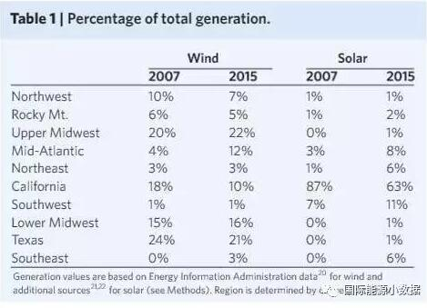
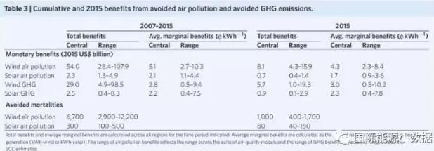
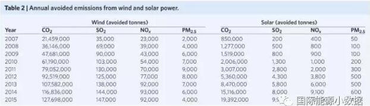

风电、光伏成本高 但你知道其社会收益是多少吗？
- 在光伏、风电的发展过程中，大多数人都在关注其成本的下降，特别是何时实现平价上网，但是对于光伏、风电的公共效益往往只是定性描述。针对这个问题，美国劳伦斯伯克利国家实验室研究人员在最新一期《自然˙能源》发表文章，对因为风电、光伏带来的空气改善所带来的公共收益进行了量化计算，具体计算过程和结果可参见以下三个表格（美国各地区光伏风电比例、污染物减排数字、因减排带来的经济收益）。



- 综上表所述，2007年至2015年间，美国因光伏、风电的发电量减少二氧化硫排放100万吨、氮氧化物60万吨、PM2.55万吨。伯克利实验室估计，相应地空气改善使得7000人避免了过早死亡，相当于节省了560亿美元的公共健康开支。此外，这期间因光伏、风电避免的二氧化碳排放相当于320亿美元。2015年，美国风电的空气质量和气候平均收益相当于7.3美分/千瓦时，而光伏的收益为4.0美分/千瓦时。上述数字为全美的平均值，各地具体收益有所不同，特别是中大西洋地区的风电收益高达14.3美分/千瓦时，而加利福尼亚风电收益仅有2.5美分/千瓦时。